import os
# get rid of the audio warnings
os.environ["SDL_AUDIODRIVER"] = "dummy"Reinforcement Learning: Tabular Q-Learning
code
python
mdp
Abstract
I’ve decided to start learning reinforcement learning with Frozenlake game and Q-Learning.
As I started exploring reinforcement learning, a colleague suggested me to start with a Q-learning, one of the simplest and most widely used algorithms in the field. To get a hands-on feel for the fundamentals, I decided to replicate the official Solving Frozenlake with Tabular Q-Learning tutorial from the Gymnasium docs.
This post captures that learning journey: walking through the environment, understanding the Q-learning steps, and getting comfortable with Gymnasium library along the way.
The Frozen Lake Environment
The frozen lake is a small, grid-based reinforcement learning environment. We play as an elf whose goal is to cross a frozen lake from the starting tile (top-left corner) to a present (bottom-right) corner, without falling into any holes along the way.
To make the task more interesting (and more realistic), the lake can be slippery. When Sliperiness is enabled, the elf does not always move exactly in the intended direction and may occasionally slip sideways.
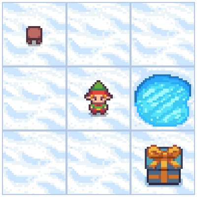
Action Space
The action space is simple and discrete. At each timestep, the agent can choose one of four actions:
- move left,
- move right,
- move down,
- move up.
Formally, the action is represented as a scalar with shape \((1,)\), taking values from the set \(\{ 0, 1, 2, 3 \}\).
This representation is a general abstraction used throughout Gymnasium. In more complex environments, a single action may encode multiple simultaneous commands. For example, in a game like Super Mario, a player can jump while moving left or right. Such combinations are still treated as a single action by the environment.
Observation Space
The observation returned by the environment represents the agent’s current position on the grid. Since Frozen Lake consists of a finite number of discrete tiles, each tile is assigned a unique integer identifier.
For example, a \(3\times{}3\) grid is indexed as:
\[ \begin{matrix} 0 & 1 & 2 \\ 3 & 4 & 5 \\ 6 & 7 & 8 \end{matrix} \]
More generally, the tile index can be computed as:
\[ \text{tile}(r,c) = r \cdot N_{\text{cols}} + c, \]
where:
- where \(r\) is row index,
- \(c\) is column index,
- \(N_{\text{cols}}\) is number of columns in grid.
This discrete state representation makes Frozen Lake particularly well-suited for tabular methods such as Q-learning.
Rewards
The default reward structure is sparse:
- \(+1\) for reaching the goal tile,
- \(0\) for stepping onto a frozen tile,
- \(0\) for falling into a hole.
In other words, the agent receives a reward only when it successfully reaches the goal. This sparse reward setting makes the problem deceptively challenging and highlights the importance of exploration in reinforcement learning.
For full details, see the official Frozen Lake environment documentation.
Reinforcement Learning Formulation
Frozen Lake can be formalized as a finite Markov Decision Process (MDP) defined by the tuple \((\mathcal{S}, \mathcal{A}, \mathcal{P}, \mathcal{R}, \gamma)\).
State Space \(\mathcal{S}\)
The state space consists of all discrete tiles on the grid:
\[ \mathcal{S} = \{ 0, 1, \dots, (N_\text{rows}\cdot{}N_\text{cols}-1) \}. \]
Each state uniquely represents the agent’s current position in the lake.
Action Space \(\mathcal{A}\)
At each time step, the agent can choose one of four actions:
\[ \mathcal{A} = \{ \text{left}, \text{down}, \text{right}, \text{up} \}. \]
These actions correspond to deterministic intentions, even though the actual transition may be stochastic when the lake is slippery.
Transition Dynamics \(P(s'|s,a)\)
The transition function defines the probability of moving from state \(s\) to state \(s'\) after taking action \(a\).
- In the non-slippery version of the environment, transitions are deterministic.
- In the slippery version, the intended action may fail, and the agent may move in a perpendicular direction with non-zero probability.
This stochasticity makes Frozen Lake a useful testbed for algorithms that must learn under uncertainty.
Reward Function \(R(s, a, s')\)
The reward function is sparse and simple:
\[ R(s, a, s') = \begin{cases} 1, & \text{if $s'$ is the goal state},\\ 0, & \text{otherwise}. \end{cases} \]
Episodes terminate when the agent reaches the goal or falls into a hole.
from dataclasses import dataclass
import gymnasium as gym
import matplotlib.pyplot as plt
import numpy as np
import pandas as pd
import seaborn as sns
from aquarel import load_theme
from gymnasium.envs.toy_text.frozen_lake import generate_random_map
from tqdm.auto import tqdm, trange
%config InlineBackend.figure_formats = {'retina', 'png'}@dataclass(frozen=True, slots=True)
class Params:
n_runs: int = 20 # number of runs from scratch
total_episodes: int = 2_000 # total episodes (# of playthroughs) in the same run
learning_rate: float = 0.8 # Q-Learning learning rate
gamma: float = 0.95 # discounting rate
epsilon: float = 0.1 # probability of exploration vs. exploitation
proba_frozen: float = 0.9 # probability that a tile is frozen (not a hole)
is_slippery: bool = False # enables slipping: 1/3 forward, 1/3 left, 1/3 right
seed: int = 123 # seed for reproducabilitySHOW_PROGRESS: bool = FalseThe Implementation
class Qlearning:
qtable: np.ndarray
def __init__(self, lr: float, gamma: float, state_size: int, action_size: int) -> None:
self.lr = lr
self.gamma = gamma
self.state_size = state_size
self.action_size = action_size
self.reset_qtable()
def update(self, state: int, action: int, reward: float, new_state: int) -> float:
"""Update Q(s,a) := Q(s,a) + lr * [R(s,a) + gamma * max Q(s',a') - Q(s,a)]"""
delta = reward + self.gamma * np.max(self.qtable[new_state, :]) - self.qtable[state, action]
q_update = self.qtable[state, action] + self.lr * delta
return q_update
def reset_qtable(self) -> None:
"""Reset the Q-table."""
self.qtable = np.zeros((self.state_size, self.action_size))
class EpsilonGreedy:
def __init__(self, epsilon: float, seed: int | None) -> None:
self.eps = epsilon
self.rng = np.random.default_rng(seed)
def choose_action(self, action_space: gym.spaces.Space, state: int, qtable: np.ndarray) -> int:
"""Choose an action `a` in the current world state (s)."""
action: int
# random number decides whether we do ...
explore_exploit_tradeoff = self.rng.uniform(0, 1)
if explore_exploit_tradeoff < self.eps: # ... exploration (random action) ...
action = action_space.sample()
else: # ... or exploitation (use direction with the biggest Q-value for this state)
(max_ids,) = np.where(qtable[state, :] == max(qtable[state, :]))
action = self.rng.choice(max_ids) # pick one if multiple directions with max probability
return actionDefine Training Loop
def run_env(env: gym.Env, learner: Qlearning, explorer: EpsilonGreedy, p: Params, state_size: int, action_size: int):
rewards = np.zeros((p.total_episodes, p.n_runs), dtype=float)
steps = np.zeros((p.total_episodes, p.n_runs), dtype=int)
episodes = np.arange(p.total_episodes, dtype=int)
qtables = np.zeros((p.n_runs, state_size, action_size), dtype=float)
all_states: list[int] = []
all_actions: list[int] = []
for run in trange(p.n_runs, leave=False, disable=(not SHOW_PROGRESS)):
learner.reset_qtable()
for episode in tqdm(episodes, leave=False, disable=(not SHOW_PROGRESS)):
state, _ = env.reset(seed=p.seed)
step: int = 0
done: bool = False
total_rewards: float = 0.0
while not done:
action = explorer.choose_action(action_space=env.action_space, state=state, qtable=learner.qtable)
# log all the stats and actions
all_states.append(state)
all_actions.append(action)
# take the action $a$ and observe the outcome state $s'$ and reward $r$
new_state, reward, terminated, truncated, info = env.step(action)
# mark as done whether game was terminated (victory, hole) or truncated (wall)
done = terminated or truncated
# learner updates Q-table
learner.qtable[state, action] = learner.update(state, action, float(reward), new_state)
total_rewards += float(reward)
step += 1
# our new state is state
state = new_state
# log all rewards and steps
rewards[episode, run] = total_rewards
steps[episode, run] = step
qtables[run, :, :] = learner.qtable
return rewards, steps, episodes, qtables, all_states, all_actionsdef postprocess(episodes: np.ndarray, params: Params, rewards: np.ndarray, steps: np.ndarray, map_size: int):
"""Convert the results of the simulation into dataframes."""
res = pd.DataFrame(
data={
"Episodes": np.tile(episodes, reps=params.n_runs),
"Rewards": rewards.flatten(order="F"),
"Steps": steps.flatten(order="F"),
}
)
res["cum_rewards"] = rewards.cumsum(axis=0).flatten(order="F")
res["map_size"] = np.repeat(f"{map_size}x{map_size}", res.shape[0])
st = pd.DataFrame(data={"Episodes": episodes, "Steps": steps.mean(axis=1)})
st["map_size"] = np.repeat(f"{map_size}x{map_size}", st.shape[0])
return res, stdef qtable_directions_map(qtable: np.ndarray, map_size: int):
"""Get the best learned action & map it to arrows."""
eps = np.finfo(qtable.dtype).eps # minimum float number on the machine
directions = {0: "←", 1: "↓", 2: "→", 3: "↑"}
qtable_val_max = qtable.max(axis=1).reshape(map_size, map_size)
qtable_best_action = np.argmax(qtable, axis=1).reshape(map_size, map_size)
qtable_directions = np.empty(qtable_best_action.size, dtype=str)
for idx, val in enumerate(qtable_best_action.flat):
if qtable_val_max.flat[idx] > eps:
# Assign an arrow only if a minimal Q-value has been learned as best action
# otherwise since 0 is a direction, it also gets mapped on the tiles where
# it didn't actually learn anything
qtable_directions[idx] = directions[val]
qtable_directions = qtable_directions.reshape(map_size, map_size)
return qtable_val_max, qtable_directionsdef plot_q_values_map(qtable: np.ndarray, env: gym.Env, map_size: int):
"""Plot the last frame of the simulation and the policy learned."""
qtable_val_max, qtable_directions = qtable_directions_map(qtable, map_size)
fig, ax = plt.subplots(nrows=1, ncols=2, figsize=(10, 5.5), constrained_layout=True)
ax[0].imshow(env.render(), aspect="equal", interpolation="none")
ax[0].axis("off")
ax[0].set_title("Last frame")
# Plot the policy
sns.heatmap(
qtable_val_max,
annot=qtable_directions,
fmt="",
square=True,
ax=ax[1],
cmap=sns.color_palette("Blues", as_cmap=True),
linewidths=0.5,
linecolor="black",
xticklabels=[],
yticklabels=[],
)
ax[1].set(title="Learned Q-values\nArrows represent best action")
ax[1].axis("off")
# autoscale annotation font size
rows, cols = qtable_val_max.shape
bbox = ax[0].get_window_extent().transformed(fig.dpi_scale_trans.inverted())
width_in, height_in = bbox.width, bbox.height
# Heuristic scaling factor (tweak as needed)
scale = min(width_in / cols, height_in / rows)
fontsize = scale * 50
# Apply new font size
for text in ax[1].texts:
text.set_fontsize(fontsize)
for _, spine in ax[1].spines.items():
spine.set_visible(True)
spine.set_linewidth(0.7)
spine.set_color("black")
return fig, axdef plot_states_actions_distribution(states: list[int], actions: list[int], map_size: int):
"""Plot the distributions of states and actions."""
labels = {"LEFT": 0, "DOWN": 1, "RIGHT": 2, "UP": 3}
fig, ax = plt.subplots(nrows=1, ncols=2, figsize=(11, 5), constrained_layout=True)
sns.histplot(data=states, ax=ax[0], kde=True)
ax[0].set_title("States")
sns.histplot(data=actions, ax=ax[1])
ax[1].set_xticks(list(labels.values()), labels=labels.keys())
ax[1].set_title("Actions")
return fig, axdef plot_steps_and_rewards(rewards_df: pd.DataFrame, steps_df: pd.DataFrame):
"""Plot the steps and rewards from dataframes."""
fig, ax = plt.subplots(nrows=1, ncols=2, figsize=(11, 5), constrained_layout=True)
sns.lineplot(data=rewards_df, x="Episodes", y="cum_rewards", hue="map_size", linewidth=0.7, ax=ax[0])
ax[0].set(ylabel="Cumulated rewards")
sns.lineplot(data=steps_df, x="Episodes", y="Steps", hue="map_size", linewidth=0.7, ax=ax[1])
ax[1].set(ylabel="Averaged steps number")
for axi in ax:
axi.legend(title="map size")
return fig, axfrom collections.abc import Callable
EnvFactory = Callable[[int], gym.Env]
def run_experiments(make_env: EnvFactory, params: Params, map_sizes: list[int] | int):
res_all = pd.DataFrame()
st_all = pd.DataFrame()
if isinstance(map_sizes, int):
map_sizes = [map_sizes]
for map_size in map_sizes:
env = make_env(map_size)
action_size: int | None = getattr(env.action_space, "n", None)
assert action_size is not None
state_size: int | None = getattr(env.observation_space, "n", None)
assert state_size is not None
env.action_space.seed(params.seed) # Set the seed to get reproducible results when sampling the action space
learner = Qlearning(
lr=params.learning_rate, gamma=params.gamma, state_size=state_size, action_size=action_size
)
explorer = EpsilonGreedy(epsilon=params.epsilon, seed=params.seed)
print(f"Map size: {map_size}x{map_size}")
rewards, steps, episodes, qtables, all_states, all_actions = run_env(
env, learner, explorer, params, state_size, action_size
)
# Save the results in dataframes
res, st = postprocess(episodes, params, rewards, steps, map_size)
res_all = pd.concat([res_all, res])
st_all = pd.concat([st_all, st])
qtable = qtables.mean(axis=0) # Average the Q-table between runs
with load_theme("ambivalent"):
plot_states_actions_distribution(states=all_states, actions=all_actions, map_size=map_size)
plt.show()
with load_theme("ambivalent"):
plot_q_values_map(qtable, env, map_size)
plt.show()
env.close()
with load_theme("ambivalent"):
plot_steps_and_rewards(res_all, st_all)
plt.show()def make_frozenlake_env(params: Params) -> EnvFactory:
def _factory(map_size: int) -> gym.Env:
return gym.make(
"FrozenLake-v1",
is_slippery=params.is_slippery,
render_mode="rgb_array",
desc=generate_random_map(size=map_size, p=params.proba_frozen, seed=params.seed),
# reward_schedule=(10.0, -1.0, -0.01), # reach goal, reach hole, reach frozen (includes Start)
)
return _factory
map_sizes = [4, 7, 9, 11]
params = Params()
run_experiments(make_frozenlake_env(params), params, map_sizes)Map size: 4x4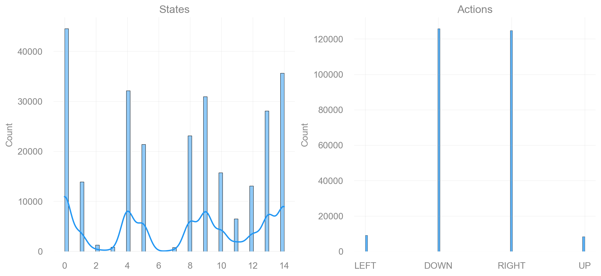
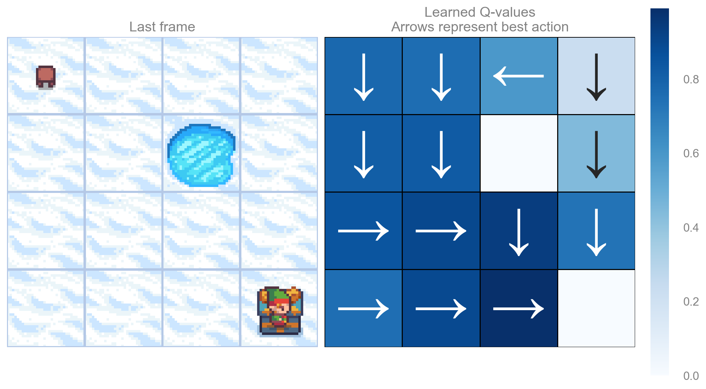
Map size: 7x7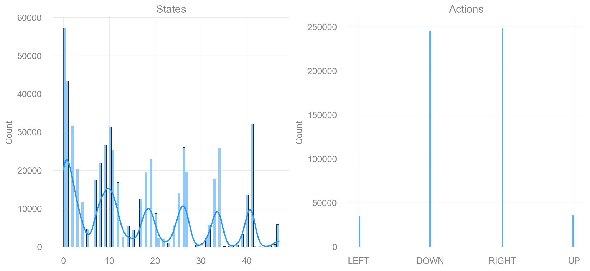
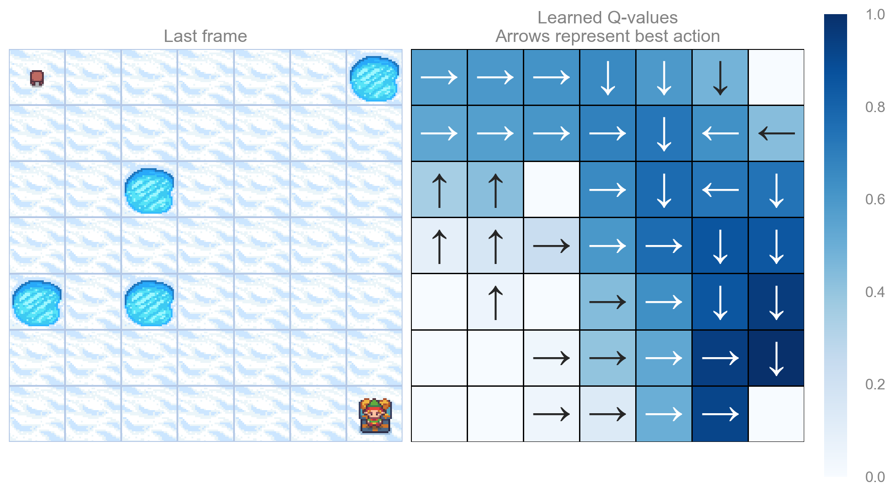
Map size: 9x9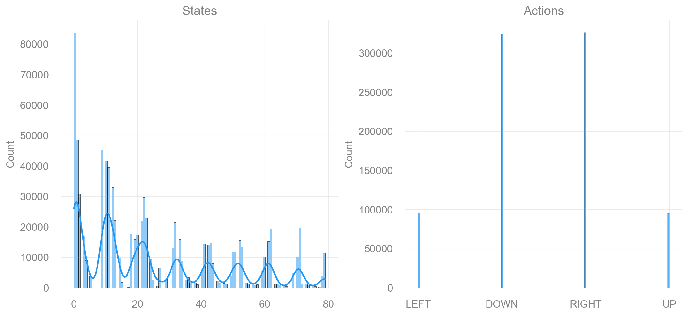
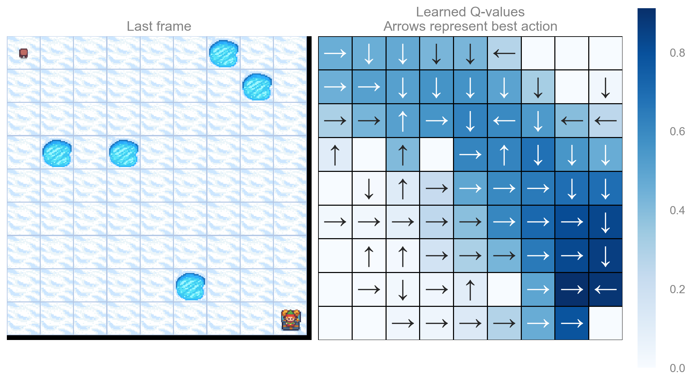
Map size: 11x11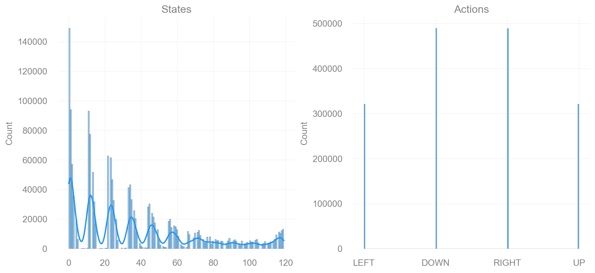
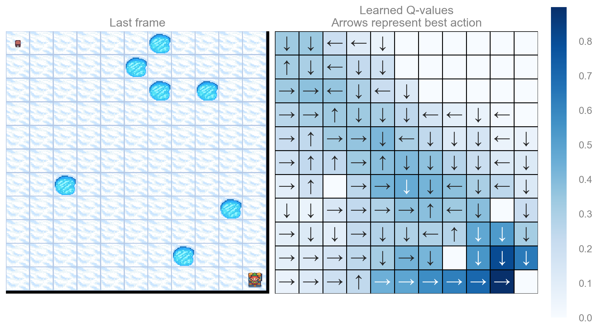

Appendix
SHOW_PROGRESS = False
def make_frozenlake_env(params: Params) -> EnvFactory:
def _factory(map_size: int) -> gym.Env:
return gym.make(
"FrozenLake-v1",
is_slippery=params.is_slippery,
render_mode="rgb_array",
desc=generate_random_map(size=map_size, p=params.proba_frozen, seed=params.seed),
reward_schedule=(10.0, -10.0, -0.01), # reach goal, reach hole, reach frozen (includes Start)
)
return _factory
params = Params()
run_experiments(make_frozenlake_env(params), params, map_sizes=[5, 25])Map size: 5x5
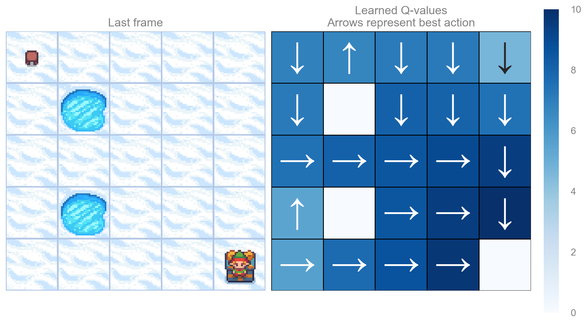
Map size: 25x25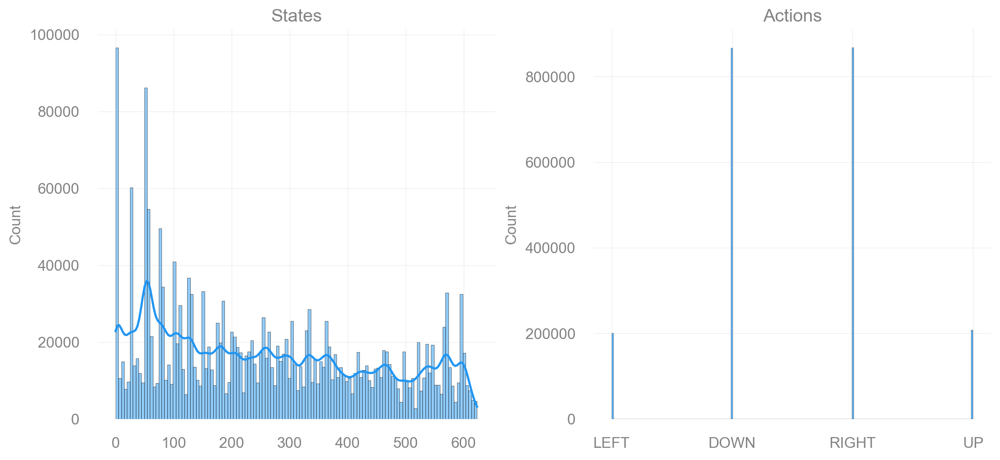
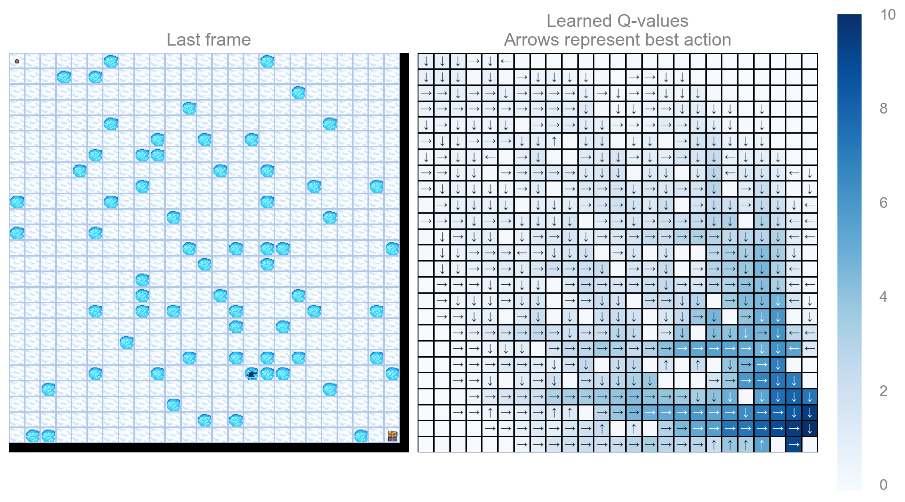
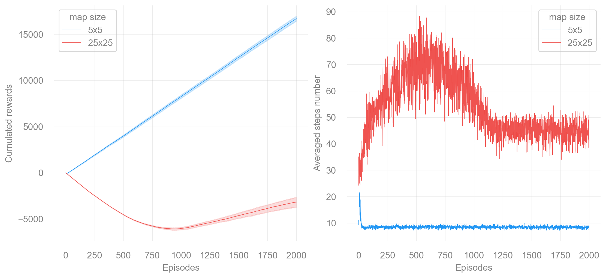